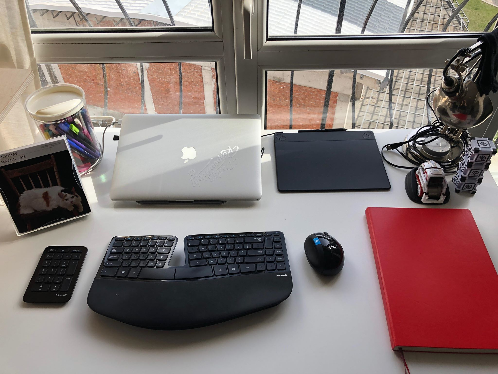

Stefan Vladimirov
Chief Creative at Swipes. Loves order and beauty. Always striving to achieve the balance between function
and aesthetics.
Product Designer & Illustrator
Short intro
My name is Kalina and I’m a queer designer and overall nerd based in Sofia. I love my cats, mountains, sci fi, comics and overanalyzing.
What do you do for a living?
I’m a product design and illustrator with a strong interest in design systems and inclusivity in design.
When did you find your passion for illustration?
If I had to pick a certain point in time, probably 5 years ago, while designing the website for my first agency, but it was more of a gradual process instead of an “aha” moment.
For how long have you been a designer?
I’ve worked in the design industry for the past 6 years.
Describe the beginning of your day
I usually wake up a few minutes before my alarm and I cuddle with my cat in bed. I shower first thing when I get out of bed and I make some breakfast (usually homemade granola and yogurt). I check social media and news while drinking my coffee and then I meditate. After that I’ll either try to squeeze in a workout or I get to work.
What’s your workspace?
I have always worked from home and I absolutely love it. My sitting desk and chair are from IKEA and I’m planning to upgrade to one of their standing desks soon.
What’s your source for inspiration?
I don’t like to think in terms of inspiration when it comes to my work. I use research and reference to make informed choices.
What works are you most proud of?
I’m honored and humbled to have worked on a software platform for online testing that’s used by NATO and the US DoD. It was a very challenging process in terms of security and accommodating users with different levels of tech savvy.
What are the tools you use in your day to day life?
I use Affinity Designer for illustration and icon design. I’m currently transitioning from Sketch to Figma for product and I also use Webflow for web design and simple prototyping. Todoist is my all-time favourite to-do/list management app and Paper is my go to for documentation and notes. I also jump between online tools for accounting and finances, but I don’t have a strong opinion on a specific one.
Do you follow any set of principles for your work?
I believe every profession is the algorithmic application of a set of principles, so as a working person, I do follow one myself.
What’s your favourite movie?
The Matrix, all three movies.
What’s your favourite book?
The Dark Tower saga by Stephen King.
What advice would you give to people that start out with Product Design and Illustration?
Drink a lot of water, get a good night’s sleep every night, take care of your mental health and always remember you’re just a human trying to do something useful for other humans.
Have you ever thought of empowering your creative community in any way, shape or form?
I do my best to help others in the design community, especially newcomers and underrepresented people. I volunteer for OOOH and a few similar orgs and I’m always happy and willing to participate in and signal boost any initiative helping women, NB people, POC, LGBTQ+, immigrants, people with disabilities and other underprivileged groups.
Recommended reads